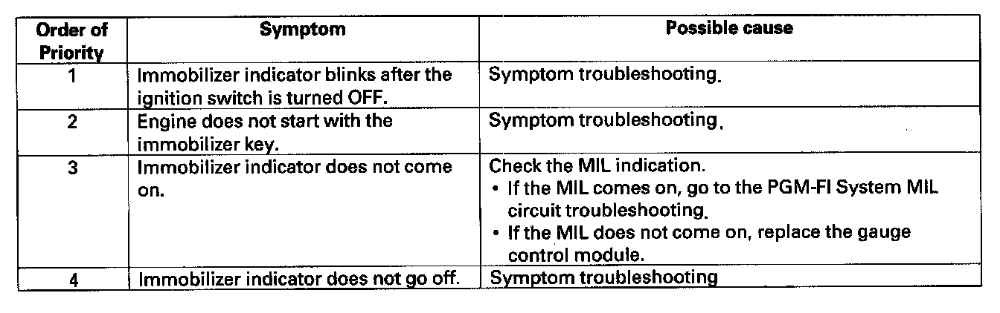

Operation CHARM
: Car repair manuals for everyone.
Home
>>
Acura
>>
2007
>>
MDX V6-3.7L
>>
Repair and Diagnosis
>>
Accessories and Optional Equipment
>>
Antitheft and Alarm Systems
>>
Testing and Inspection
>>
Symptom Related Diagnostic Procedures
>>
Symptom Troubleshooting
Symptom Troubleshooting
Symptom Troubleshooting

1.
Troubleshoot the immobilizer system by the order of the priority shown: